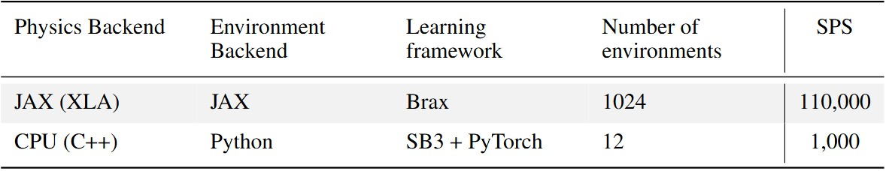
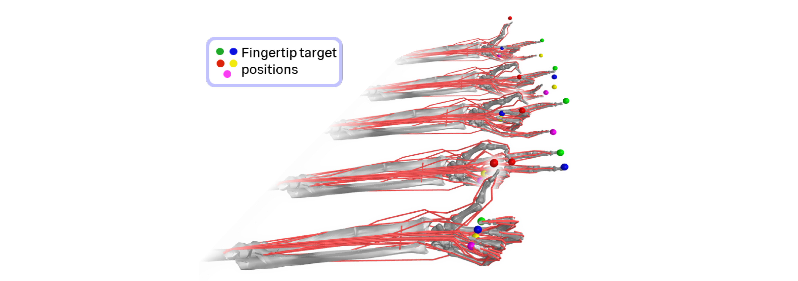
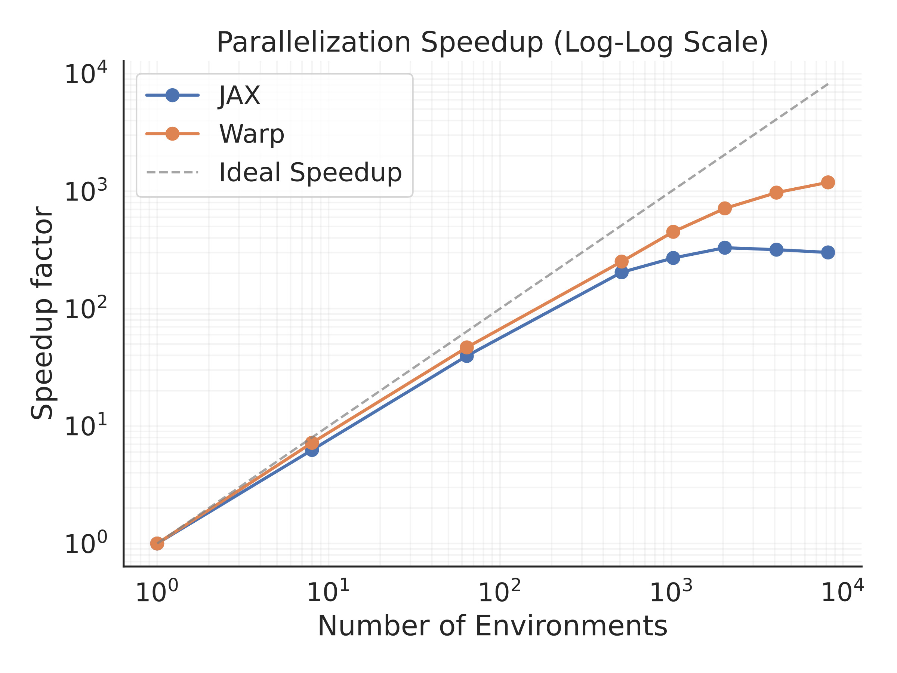
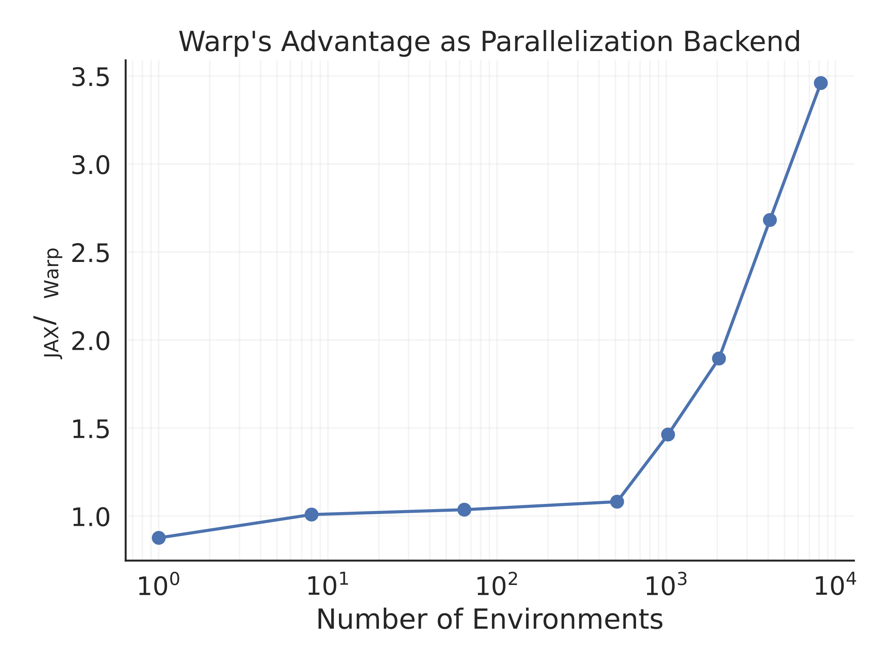
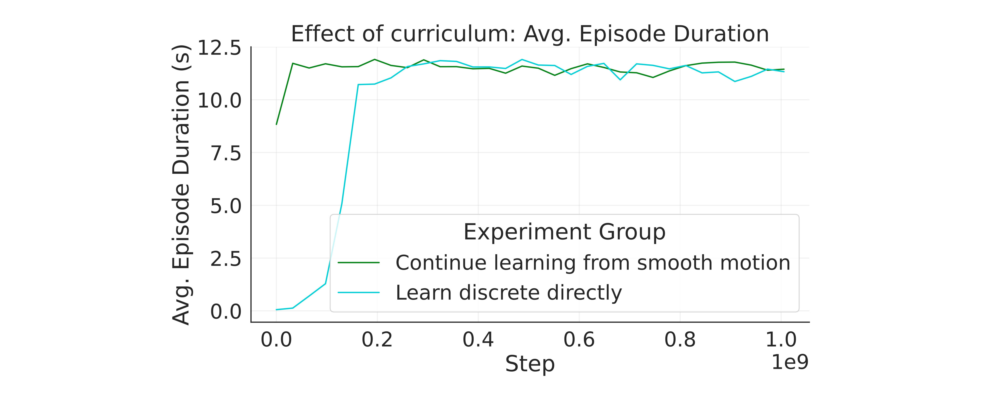
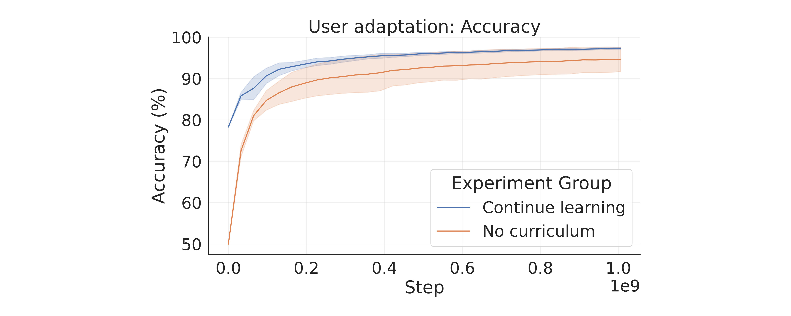
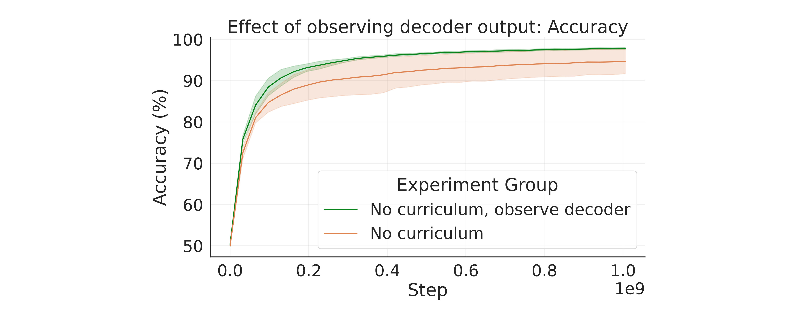
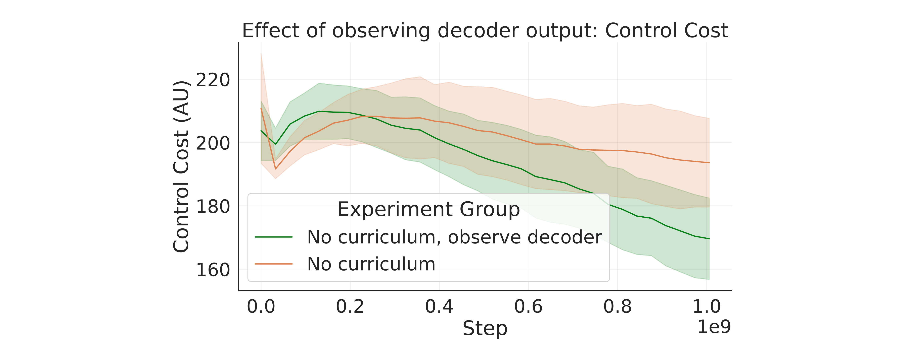

End-to-end Simulation of a
Closed-loop Neural Interface
Abstract
The standard engineering approach when facing uncertainty is modelling. Mixing data from a well calibrated model with real recordings has led to breakthroughs in many applications of AI, from computer vision to autonomous driving. This data augmentation approach is beginning to see some success for biosignal processing as well. However, while necessary, it is insufficient to only generate neural signals that describe a predetermined motor behaviour to perform virtual neurophysiological experiments.
In this study we demonstrate a proof-of-concept in silico neuromechanical model, consisting of a fully-forward musculoskeletal simulation, reinforcement learning and sequential, online sEMG synthesis. This approach can provide not only synchronised kinematics, dynamics and corresponding neural activity but also model feedback and feedforward control from the virtual participant. Through this, online control problems can be represented, as the simulated human can respond to the output of the neural interface through the RL policy. We break down an implementation for a gesturing task with a hand model, and lay the foundations of using this technique to evaluate neural controllers, augment training datasets and generate synthetic data for neurological conditions.
Behaviours learnt with our framework
Finger gesturing task with concurrent EMG synthesis. The finger endpoints of the target gestures visualised as markers of different colours. This EMG does not affect the behaviour yet, but it serves as our pretraining data for the EMG decoder. The muscle control is closed loop, and reacts to recover from perturbations.
Online control with HMI in the loop. Instead of rewarding the agent for following the motion, it must modulate its EMG output to reach a desired gesture decoder output, classifying each finger as flexed/extended. The decoder's prediction is shown with the colour of the markers (green - flexed, grey - extended).
Alternate control strategies. If previous motor skills are forgotten and HMI use is learnt directly, the resulting behaviour will significantly deviate in some degrees of freedom.
Our Approach
We leverage hardware acceleration for the physics (available from MuJoCo MJX), the reinforcement learning and the EMG synthesis. By compiling the simulation pipeline to GPU compatible operations, we can parallelise it to thousands of simultaneous environments. This allows collecting the necessary experience >100 times faster than through traditional frameworks used for MSk RL control.

Table 1: Comparison of the simulation steps per second including the learning overheads between our closed-loop HMI environment and the original MyoHand learning environment.

Illustration of the experience collection with parallel environments. Each environment is using a different projection of the reference motion templates, to prevent the memorisation of a single motion cycle.


Comparison of the speedup gained with parallelisation using JAX and NVIDIA Warp implementations of the physics.

Before synthesising EMG, we pretrain a baseline policy in a gesturing task. Policies trained first on slower, more continuous motion are transferable to more sudden movements.
Closed-loop Control and Adaptation
We demonstrate a model of adaptation and closed-loop control in a virtual user of a EMG-driven HMI. The impact that closed-loop control and adaptation has on behaviour is significant, and should not be ignored entirely in neuromechanical models. Our open-source framework serves as a virtual prototyping platform for arm-worn EMG interfaces.

Accuracy of the pretrained decoder as the virtual user learns to adapt behaviour to improve over time. Average accuracy across the five fingers with two classes (flexed and extended) shown. Continuing learning after the gesturing task is advantageous, but learning to use the decoder without prior learning is also possible.

By extending the observation space to inlcude the decoder output we reinforce the closed-loop nature of the task, and more skilled use is learnt even without gesturing training.

The amount of muscle effort generated by the agent changes over the course of adaptation, and closed-loop feedback also enables higher accuracy control with less effort.
Acknowledgements
This work was funded by the Imperial-Meta Wearable Neural Interfaces Research Centre. We would like to express our thanks to Claudia Sabatini and Dimitrios Chalatsis for the valuable discussions during this study.
BibTeX
@article{YourPaperKey2024,
title={Your Paper Title Here},
author={First Author and Second Author and Third Author},
journal={Conference/Journal Name},
year={2024},
url={https://your-domain.com/your-project-page}
}